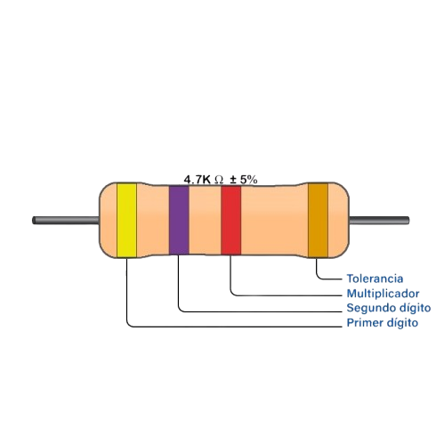
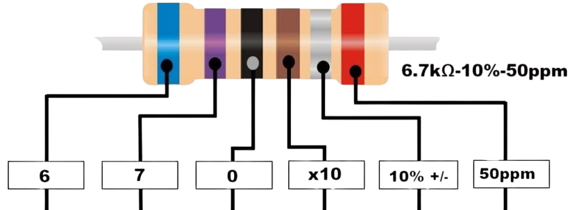

Tipos de Resistencias de Bandas
1. Resistencias de 4 bandas
Son las más comunes y simples. Se componen de:
- Banda 1 y Banda 2: Representan los dígitos significativos del valor de resistencia.
- Banda 3: Representa el multiplicador.
- Banda 4: Indica la tolerancia.
Ejemplo:
Colores: Amarillo, Violeta, Rojo, Dorado.
Valor: 4.7 kΩ ± 5%.

2. Resistencias de 5 bandas
Ofrecen mayor precisión. Se componen de:
- Banda 1, Banda 2 y Banda 3: Representan los dígitos significativos del valor.
- Banda 4: Representa el multiplicador.
- Banda 5: Indica la tolerancia.
Ejemplo:
Colores: Marrón, Negro, Rojo, Naranja, Marrón.
Valor: 47.5 kΩ ± 1%.
3. Resistencias de 6 bandas
Incluyen una banda adicional para el coeficiente de temperatura. Se componen de:
- Banda 1, Banda 2 y Banda 3: Representan los dígitos significativos.
- Banda 4: Representa el multiplicador.
- Banda 5: Indica la tolerancia.
- Banda 6: Representa el coeficiente de temperatura.
Ejemplo:
Colores: Azul, Violeta, Negro, Cafe, Dorado, Rojo.
Valor: 6.7 kΩ - 10% (50 ppm/°C).
